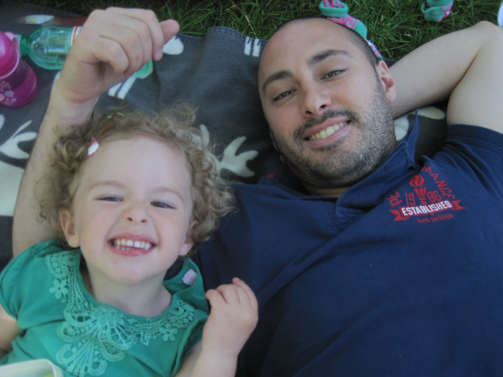

Sherief Badran
Intressen
- Hänga med familj och vänner.
- Tennis.
- Programmera JavaScript.
- Resa.
Familj
Jag har flyttat till Kalmar tillsammans med min familj för att läsa webbprogrammering i minst två år. Är nog sugen på att läsa ett tredje år men det beror givetvis på hur det går.
Min sambo heter Therese och tillsammans har vi en liten dotter på 3 år.
Styrkor / Svagheter
Min styrka är att jag är väldigt envis, det är på gott och ont eftersom jag allt för ofta tenderar att djupdyka och fördjupa mig i saker fast än jag inte har tid. Ibland faller det på att jag ger mig ut på för hal is.
Tidigare Utbildning
Med start hösten 2003 påbörjade jag en civilingengörsutbildning (teknisk fysik) på KTH i Stockholm. Det är en väldigt tung utbildning så efter 2 år blev jag väldigt utmattad och studietrött. Jag började missa tentor och hade dessutom ett par kurser efter mig sedan tidigare. Jag fick lägga all vaken tid av dygnet på studier för att i bästa fall klara kurserna vilket resulterade i att jag började fundera på om det var värt arbetet. Jag kom fram till att det inte var så extremt viktigt för mig att ta en civilingengörsexamen, och prövade därför att ta ett sabbatsår.
Arbetslivserfarenhet
Under sabbatsåret flyttade jag till Göteborg och tog ett jobb som lärare i matematik och fysik. Det tyckte jag var väldigt roligt och givande eftersom jag brinner väldigt mycket för de ämnena. Det var även under mitt sabbatsår som jag träffade min sambo Therese. Det var med andra ord ett väldigt lyckat år.
Jag fortsatte sedan att jobba som lärare fram till och med hösten 2013. Under min tid som lärare testade jag av en slump på html, css och senare även JavaScript och PHP. Jag fattade intresse för detta till den grad att det blev som en hobby.
Programmering
Följande har jag prövat på tidigare inom programmering/webbutveckling:
-
HTML
- XHTML
- HTML 5
- CSS
-
JavaScript
- Ajax
- Modul och Facade pattern
- Prototyper och arv
- Unit testing
Om man lärt sig grunderna i javaScript hyfsat bra rekommenderar jag att läsa följande böcker för att ta sig vidare:
- Object-Oriented JavaScript
- Stoyan Stefanov
- JavaScript Patterns
- Stoyan Stefanov
- High Performance JavaScript
- Nicholas C. Zakas
- Even Faster Web Sites
- Steve Sounders
- AJAX and PHP: Building Responsive Web Applications
- Cristian Darie, Bogdan Brinzarea